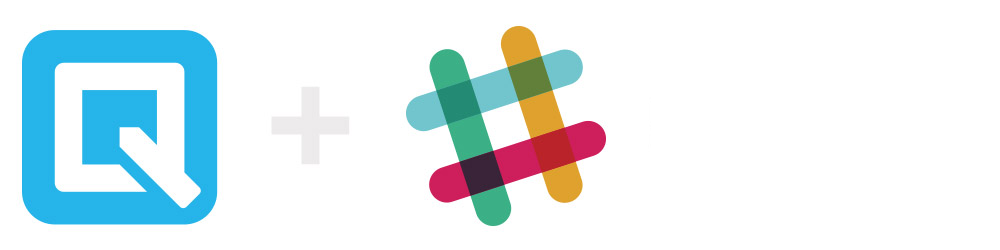

Software Engineer - Quip Team
Aug 2019 - Present

Software Engineer - Threat Intelligence Engineering Team
Aug 2018 - Aug 2019

Software Engineering Intern - ID Analytics Team
Nov 2017 - Jun 2017

Software Engineering Intern - Application Development Team
Jun 2017 - Sept 2017

Software Engineering Intern - Application Development Team
July 2015 - Sept 2015

B.S. Computer Science, Cum Laude
GPA: 3.73
Graduation Date: June 2018